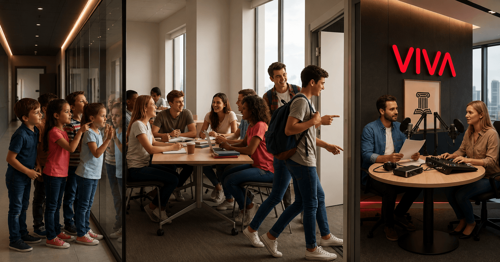
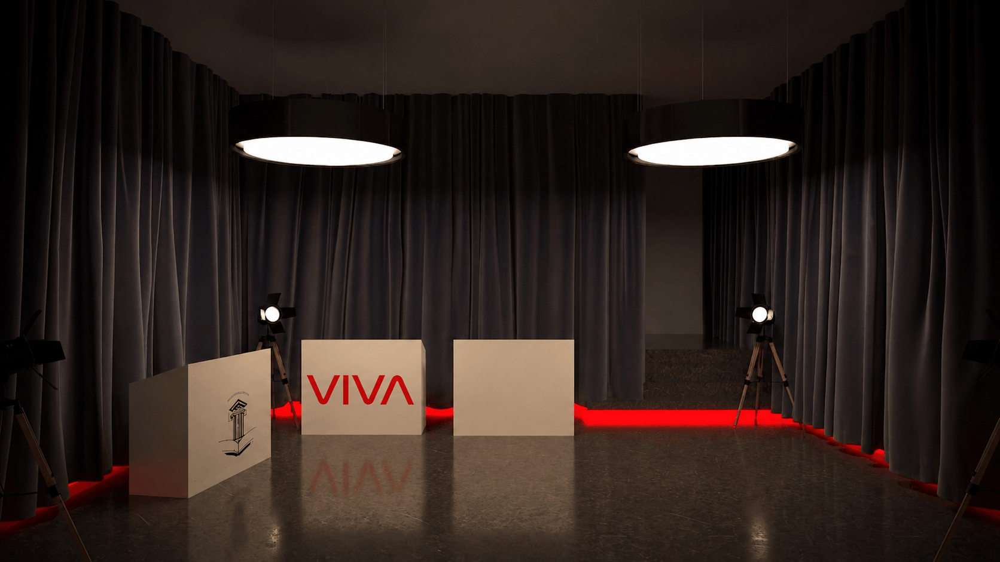
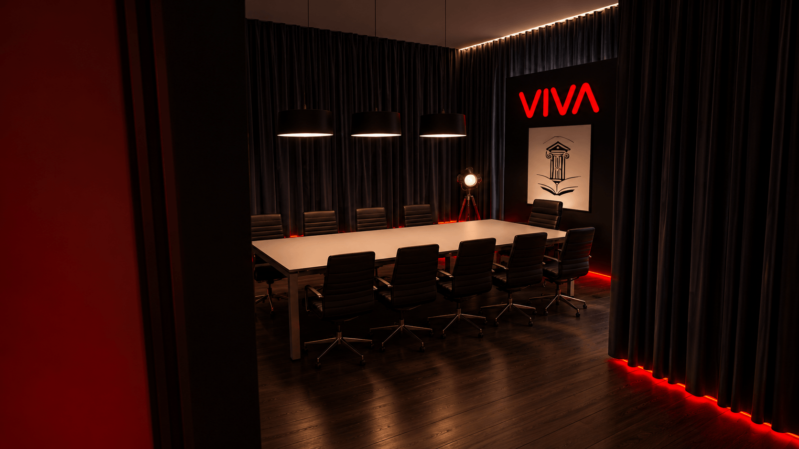
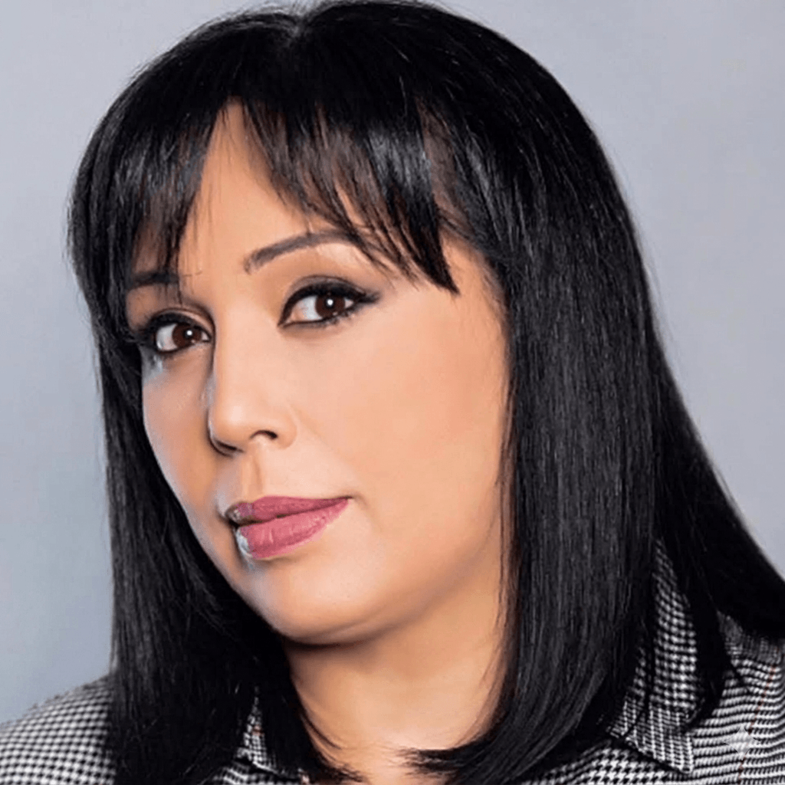
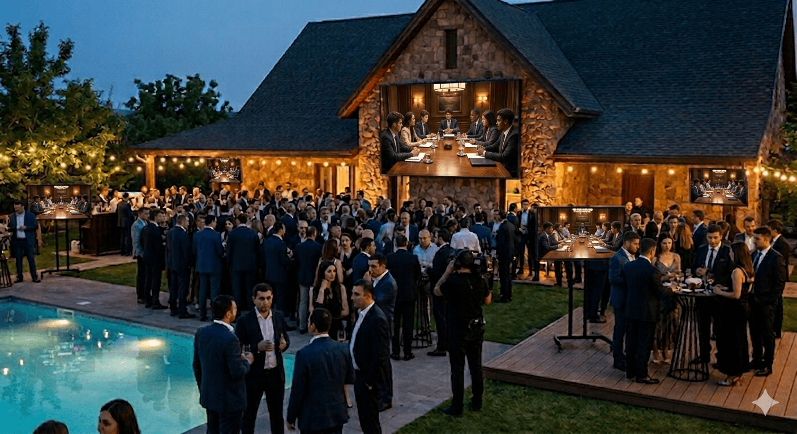

«Ուսանողական հարթակ» նախագիծ

«Ուսանողական Հարթակ» նախագիծը համաձայնեցված է՝ ԵՊՀ, ԵՊԲՀ, ԵՊՏՀ, ՀՊՄՀ, ԲՊՀ, ՃՇՀԱՀ, Հ.ԵՎ.Հ ուսանողական խորհուրդների հետ։ Նախագիծը ձևավորված է որպես միջբուհական ուսանողական նախաձեռնություն, որի նպատակն է ստեղծել ակտիվ, բաց և համագործակցային միջավայր Հայաստանի տարբեր բուհերի ուսանողների համար։ Ծրագիրը ներկայացնում է ինտելեկտուալ և ժամանցային խաղերի ձևաչափ, որտեղ ուսանողները հնարավորություն են ստանում անցկացնել ակտիվ և հետաքրքիր ժամանակ, զարգացնել թիմային մտածողություն, ձեռք բերել նոր ծանոթություններ և ձևավորել իրենց հասակակիցներից կազմված լայն սոցիալական շրջապատ, որը կարող է կարևոր դեր ունենալ նրանց հետագա անձնական և մասնագիտական զարգացման մեջ։ Նախագծի նպատակն է զարգացնել միջբուհական կապերը՝ ձևավորելով մրցակցային և միաժամանակ ընկերական հարթակ, որտեղ ուսանողները հնարավորություն կունենան շփվել ազատ, անմիջական և անկաշկանդ միջավայրում։ Նախագծի կառուցվածքում ներառված են ուսանողական միջոցառումներ, ինտերակտիվ խաղեր և YouTube հարթակում ցուցադրվող հաղորդումների շարք, որոնք համադրում են ժամանցը, մրցակցությունը և ուսանողական գաղափարների ներկայացումը մեդիա դաշտում՝ կարևորելով դրանց լսելիությունն ու տեսանելիությունը։
Մենք լուծում ենք այն խնդիրը, որ պետական և բուհական մակարդակով կազմակերպվող միջոցառումները հիմնականում կրում են պաշտոնական բնույթ, ինչի արդյունքում ուսանողները հաճախ զրկվում են ազատ շփման և ինքնարտահայտման հնարավորությունից։ Մեր հարթակը ստեղծված է հենց այդ բացը լրացնելու համար՝ առաջարկելով ավելի բաց, դինամիկ և ուսանողակենտրոն միջավայր։ Մեր գաղափարի կարևոր ուղղություններից մեկն է ինտելեկտուալ խաղերի շրջանակում ապահովել 1000+ ուսանողների ներգրավվածություն՝ ձևավորելով լայնամասշտաբ մրցակցային դաշտ, որտեղ հաղթող մասնակիցները կարող են իրենց դիրքավորել որպես առաջատարներ միջբուհական մակարդակում։ Սա ձևավորում է ոչ միայն մրցակցություն, այլ նաև ուժեղ մոտիվացիոն միջավայր, որը խթանում է ուսանողների զարգացմանն ու ակտիվությանը, որը կարող է նպաստել դիմորդների թվի աճին։ Այս ամենից զատ, YouTube հարթակում կստեղծվի առանձին ալիք, որտեղ ուսանողական խորհուրդների նախագահները,հովանավոր ընկերությունների ներկայացուցիչները, լավագույն խաղացողները և հետաքրքիր գաղափարներ ունեցող ուսանողները հարցազրույցների միջոցով(pot cast հաղորդաշար) հնարավորություն կունենան ներկայանալ հանրային դաշտում՝ խոսելով խաղերի,հովանանվորների կատարած աշխատանքի կարևորության, համագործակցությունների, իրենց նպատակների և կրթության կարևորության մասին։

Ուսանողական խորհուրդների հետ քննարկումից հետո որոշվեց՝ առաջին փուլում անցկացնել ուսանողական կարմիր թե սև՝ ՄԱՖԻԱ, խաղի մրցույթ։ Մենք այս խաղը ընտրեցինք պատկերացնելով, որ նախագծի հաջող ընթացքում կձևավորվի առողջ և կրեատիվ մտածող ուսանողներից կազմված մեծ թիմ ՝ընտանիք, իսկ խաղն իր ձևաչափում թույլ է տալիս ավելի լավ ճանաչել միմյանց: Խաղերը անցկացվում են մեր վարձակալած բնակարանում որը գտնվում է Սարմեն 16/2 հասցեում (Կասկադ)։ Մենք կարևորում ենք բնակարանի հասցեի հասանելիությունը, խաղային դիզայնի ապահովումը և հարմարավետությունը, որպեսզի ուսանողները կարողանան ամբողջությամբ կլանվել խաղով։ Բարձր մակարդակի կազմակերպումը մեզ կապահովի պարբերաբար անցկացվող առաջնություններում մասնակիցների թվի աճ։ Հովանավորների կողմից առաջարկի հաստատումից հետո մեր թիմը կսկսի մեծ գովազդային արշավ,որին կմիանան նաև ուսխորհուրդները՝ իրենց և բուհերի սոցիալական էջերում հրապարակումներ անելով ծրագրի լայն տարածման համար: Բնակարանում լինելու է 5 խաղասրահ, որոնցից 3-ը մրցույթային են, իսկ 2-ը՝ նախատեսված են արտամրցույթային խաղերի համար։ Մենք բարձր ենք գնահատում արտամրցույթային խաղերի կարևորությունը, քանի որ հենց այդ խաղերն են ապահովում մրցույթից դուրս մնացած մասնակիցների շարունակական ներգրավվածությունը, ստեղծում ավելի ազատ և ստեղծարար միջավայր, նպաստում նոր կապերի ձևավորմանը և պահպանում ընդհանուր հետաքրքրվածությունն ու ակտիվությունը ամբողջ միջոցառման ընթացքում։ Միաժամանակ, այս ձևաչափը հովանավորներին տալիս է բացառիկ հնարավորություն երկար ժամանակով անմիջական կապ հաստատել այդ մասնակիցների հետ՝ ներկայացնելով իրենց ծառայությունները ճիշտ պահին և միջավայրում, ինչի արդյունքում էականորեն բարձրանում է հավանականությունը, որ ուսանողները կդառնան իրենց ընկերության իրական և երկարաժամկետ հաճախորդներ։


Մենք ձգտում ենք ժամանակի ընթացքում մեր ծրագիրը զարգացնել և հասցնել այնպիսի մակարդակի, որտեղ այն կդառնա Հայաստանի ամենամեծ միջբուհական ուսանողական հարթակներից մեկը՝ ներգրավելով առնվազն 5000 մասնակից։Առաջին խողաշրջանի բարձր մակարդակի կազմակերպումը այս տեսլականը կդարձնեն իրական։ «Մաֆիա» խաղը, լինելով տարիներով սիրված և շարունակական հետաքրքրություն ունեցող ինտելեկտուալ խաղ, մեզ հնարավորություն է տալիս ձևավորել կայուն միջբուհական առաջնություն, որը կանցկացվի պարբերաբար՝ յուրաքանչյուր 6 ամիսը մեկ կամ տարեկան մեկ անգամ։ Մեր տեսլականի կարևոր բաղադրիչներից է հովանավորների հետ արդյունավետ և երկարաժամկետ համագործակցությունը․ ստեղծելով ակտիվ և ներգրավված միջավայր՝ մենք հնարավորություն ենք տալիս ուսանողներին ծանոթանալ հովանավոր ընկերությունների ծառայություններին և ժամանակի ընթացքում դառնալ նրանց հավատարիմ հաճախորդներ։ Այս մոդելը ձևավորում է շարունակական շղթայական զարգացում, որտեղ ամեն տարի բուհերն ավարտող մասնակիցներին փոխարինում են նոր ուսանողները՝ ապահովելով ծրագրի կայուն աճն ու ազդեցության ընդլայնումը։ Բացի «Մաֆիա» խաղից, մենք նպատակ ունենք ընդլայնել նախագծի շրջանակները՝ իրականացնելով լայնամասշտաբ ուսանողական ծրագրեր։Նախատեսում ենք կազմակերպել Հայաստանի ամենախոշոր ուսանողական արշավական նախագիծը, որը կնկարահանվի և կհրապարակվի YouTube հարթակում՝ հանրայնացնելով ուսանողական ակտիվ կյանքը և խթանելով կրթության կարևորության ընկալումը պատանի սերնդի շրջանում։Այս նախագիծը միավորում է արկածային, կրթական և մեդիա բաղադրիչները՝ ստեղծելով եզակի փորձառություն և լայն հանրային ազդեցություն։ Միաժամանակ, արդեն սկսել ենք աշխատանքներ մեծ ինտելեկտուալ հեռուստաշոու ստեղծելու ուղղությամբ, որը իր ձևաչափով նման կլինի հայտնի ինտելեկտուալ հաղորդումներին, սակայն կլինի ավելի լայնամասշտաբ և ինտրիգային։ Շոուին կմասնակցեն ճանաչված ինտելեկտուալ խաղերի փորձառու մասնակիցներ, ովքեր կձևավորեն իրենց թիմերը՝ ներգրավելով ուսանողների։ Այս նախաձեռնությունը կստեղծի առավել մրցակցային և զարգացնող միջավայր, կնպաստի խելացի ուսանողների առաջխաղացմանը և կհանգեցնի այնպիսի սերնդի ձևավորմանը, որը ոչ միայն կրթված է, այլ նաև ճանաչված և ակտիվ մեդիա հարթակներում։
Մեր Telegram-յան խմբում գրանցվում են ՀՀ բոլոր բուհերից 1000 մասնակից:

Բոլոր խաղերը կգնահատվեն ժյուրիի անդամների կողմից՝ ՀՀ վաստակավոր արտիստ,
Իռա Հարությունյան-ի
Մեր SMM թիմը բոլոր խաղերի ընթացքում, առանց բացառության, կնկարահանի յուրաքանչյուր
ուսանողի խաղային գործընթացը, ինչպես նաև
ուսանող-հովանավոր անմիջական շփումները։ Այս մոտեցումը յուրաքանչյուր մասնակցի
հնարավորություն կտա իրեն զգալ կարևոր և
գնահատված, միաժամանակ ձևավորելով հովանավորի հետ դրական, հիշվող և երկարաժամկետ կապ։
Ընդհանուր խաղերի թիվը կլինի 546-ը։
Մրցաշարը կտևի հունիսի 20-ից հուլիսի 10-ը:
1000 մասնակցի միջև խաղերը բաշխվում են հետևյալ կարգով՝
Փուլ առաջին՝ 1000 մասնակիցները կբաժանվեն 100 խմբի 10-ական մասնակիցներով, յուրաքանչյուր մասնակից կունենա 3 խաղի հնարավորություն։ Երկրորդ փուլ կանցնեն ամենաբարձր միավորներ վաստակած 500 մասնակիցներ։
Փուլ երկրորդ՝ 500 մասնակիցները կբաժանվեն 50 խմբի 10-ական մասնակիցներով, այս փուլում նույնպես յուրաքանչյուր մասնակից կմասնակցի 3 խաղի, իսկ արդեն հաջորդ փուլ կանցնեն մասնակիցներից ընդհամենը 200-ը։
Փուլ երրորդ՝ խաղում մնացած 200 մասնակիցները կբաժանվեն 20 խմբի 10-ական մասնակիցներով, որոնք կխաղան 3-ական խաղ։ Հաջորդ փուլ կանցնեն լավագույն արդյունք ցույց տված 80 մասնակիցները։
Փուլ չորրորդ՝ սա արդեն ¼ եզրափակիչ փուլն է, որտեղից էլ սրվում է պայքարը մասնակիցների միջև դեպի բաղձալի կիսաեզրափակիչ փուլ։ Այս փուլում 80 մասնակիցները կբաժանվեն 8 խմբի 10-ական մասնակիցներով, այս փուլում նույնպես յուրաքանչյուր մասնակից կմասնակցի 3 խաղի։ Ամենաբարձր միավորներ հավաքած 30 մասնակիցները կանցնեն վճռորոշ ՝ կիսաեզրափակիչ փուլ։
Փուլ հինգերորդ՝ կիսաեզրափակիչ փուլ։ Այս փուլում արդեն կսկսվեն նկարահանումները, յուրաքանչյույր մասնակից կունենա ծրագրի մասին իր կարծիքը հայտնելու հնարավորություն։ Կիսաեզրափակչի 30 մասնակիցները կբաժանվեն 3 խմբի 10-ական մասնակիցներով, այս փուլում նույնպես յուրաքանչյուր մասնակից կունենա 3 խաղ խաղալու հնարավորություն։ Լավագույն արդյուներ գրանցած 10 մասնակիցները կանցնեն ԵԶՐԱՓԱԿԻՉ որի յուրաքանչյուր խաղացող կհամարվի հաղթող և կներկայացվի առավել խոշոր մրցանակների։
ԵԶՐԱՓԱԿԻՉ ՓՈՒԼ ՝ լավագույն 10 մասնակիցնրը կխաղան 3 եզրափակիչ խաղ առաջինից մինչև 10-րդ հորիզոնականները պարզելու համար։
Նույնությամբ առաջին 5 փուլերը (տես փաթեթ 1) Եզրափակիչ փուլը կանցկացվի մեծ երեկույթի (evening party) ձևաչափով՝ (առանձնատուն + նկարաանում) բացօդյա հատվածում։ Մասնակիցները և հյուրերը կլինեն շուրջ 200 ուսանողներ, հովանավորներ և այլ հրավիրված անձինք։ Երեկոն կվարեն հայտնի հաղորդավարներ, կլինի DJ և հյուրասիրություն։ Երեկոյի ընթացքում բոլոր հյուրերին մեծ էկրաններով ուղիղ հեռարձակմամբ կցուցադրվեն եզրափակիչ 3 խաղերը։ Այս տարբերակում խաղերի նկարահանումը կիրականացվի պրոֆեսիոնալ մակարդակով։Կկատարվի նաև ամբողջ միջոցառման ընդհանուր նկարահանում, որը հետագայում կհրապարակվի մեր YouTube ալիքում։
Այս համագործակցությունը կապահովի լայնածավալ և շոշափելի PR ազդեցություն՝ ամրապնդելով բրենդի դիրքավորումը ուսանողական լսարանի շրջանում։ Նախագիծը կձևավորի բարձր ճանաչելիություն, ակտիվ ներգրավվածություն և երկարաժամկետ կապ երիտասարդ լսարանի հետ՝ միաժամանակ ստեղծելով ամուր հիմք, որպեսզի հաջորդ ընթացքում նախաձեռնությունը ներգրավի էապես ավելի մեծ թվով մասնակիցների և ձեռք բերի ավելի լայն հանրային արձագանք։ Այս նախագիծը ստեղծում է այնպիսի միջավայր, որտեղ ուսանողները ոչ թե պարզապես տեսնում են հովանավորին, այլ սկսում են օգտվել ծառայություններից և դառնում երկարաժամկետ բաժանորդներ

Հարգելի՛ «Viva Armenia» ընկերության ղեկավարություն
«Ուսանողական հարթակ» նախագիծը ստեղծվել է մեկ հստակ նպատակով՝ միավորել Հայաստանի ակտիվ, մտածող և նախաձեռնող ուսանողներին մեկ հարթակում։ Սակայն այն իրենից ներկայացնում է ավելին, քան պարզապես ինտելեկտուալ և ժամանցային ծրագիր։ Մեր և ձեր կողմից մշակված ճիշտ ռազմավարության շնորհիվ այն կարող է ձևավորել երիտասարդների թվային վարքագիծը, ընտրությունները և նախասիրությունները։
Սա պարզապես գովազդային հարթակ չէ․ սա ուղիղ և երկարաժամկետ շփում է Ձեր հիմնական թիրախային լսարանի՝ 18–25 տարեկան ակտիվ երիտասարդների հետ, ովքեր ամենօրյա մակարդակով օգտագործում են ինտերնետ, բջջային կապ և թվային ծառայություններ։ Ծրագրի կառուցվածքը հնարավորություն է տալիս ոչ միայն ներկայացնել «Viva Armenia» ընկերությունը, այլ ստեղծել իրական պահանջարկ նրա ծառայությունների նկատմամբ։
Մասնակիցների ակտիվ ներգրավվածությունը, խաղերի ընթացքում և հատկապես արտամրցույթային հատվածներում ձևավորվող երկարատև շփումը ստեղծում են այն միջավայրը, որտեղ ուսանողը ոչ թե պարզապես տեսնում է բրենդը, այլ սկսում է օգտվել դրանից։
ՀԱՄԱԳՈՐԾԱԿՑՈՒԹՅԱՆ ԱՌԱՋԱՐԿ
Մենք առաջարկում ենք «Viva Armenia» ընկերությանը դառնալ նախագծի գլխավոր հովանավոր՝ ոչ միայն ստանալով տեսանելիություն, այլև անմիջապես ներգրավելով նոր օգտատերեր խաղերի անցկացման վայրում կառուցված «Viva Armenia» տաղավարում։
Համագործակցության շրջանակում՝
- Կստեղծվի հատուկ «Viva Student Pack» ուսանողական առաջարկ, որը կառաջարկվի բոլոր մասնակիցներին՝ հաշվի առնելով նրանց թվային ակտիվ վարքագիծը։
- «Viva Armenia»-ի ծառայությունները կներկայացվեն ոչ թե դասական գովազդի, այլ անմիջական շփման և փորձառության միջոցով։
- Կապահովվի բրենդի լիարժեք ներկայություն խաղասրահներում, մեդիա բովանդակությունում և YouTube հաղորդումներում։
- Խաղային մեխանիզմների միջոցով ուսանողներին կխրախուսվի օգտվել «Viva Armenia»-ի ծառայություններից։
Միաժամանակ, նախագծի կարևոր նպատակներից է ստեղծել այնպիսի միջավայր, առաջարկներ և ազդեցություն, որտեղ նույնիսկ այն ուսանողները, ովքեր արդեն օգտվում են այլ թվային ծառայություններից, կվերանայեն իրենց ընտրությունը և աստիճանաբար կանցնեն «Viva Armenia»-ի ծառայություններին՝ դառնալով ընկերության նոր և երկարաժամկետ բաժանորդներ։
Սա գովազդ չէ։ Սա համակարգ է, որտեղ ուսանողները ոչ թե պարզապես տեսնում են «Viva Armenia»-ն, այլ սկսում են օգտագործել այն և դառնում հաճախորդ։
Խաղերի, ինտերնետի և մեդիա բովանդակության ակտիվ օգտագործման արդյունքում ուսանողները բնականորեն կանցնեն այդ փաթեթին։
Հենց այս միջավայրում «Viva Armenia»-ն կարող է ներկայացնել իր ծառայությունները ճիշտ պահին, ինչը բերում է իրական արդյունքի՝ ծառայության ընտրության։
Մեր նպատակը պարզ է՝ ստեղծել ոչ միայն միջոցառում, այլ իրական միջավայր, որտեղ ձևավորվում են ապագա հաճախորդները։
Եթե ուսանողն իր ակտիվ տարիները կապում է «Viva Armenia»-ի հետ, նա մեծ հավանականությամբ կմնա ձեր հաճախորդ տարիներով։
Սա պարզապես հովանավորություն կամ գովազդային առաջարկ չէ, այլ նոր հաճախորդների ներգրավման և երկարաժամկետ բաժանորդների ձևավորման իրական համակարգ է։
Եկեք միասին ստեղծենք այդ միջավայրը։
«Viva Armenia» × «Ուսանողական Հարթակ»
Փաթեթում ներառված է՝
- «Viva Armenia»-ի ներկայացում որպես նախագծի գլխավոր հովանավոր
- 1000+ ուսանողի անմիջական ներգրավվածություն
- 546 խաղերի ընթացքում բրենդի շարունակական ներկայություն
- «Viva Armenia» բրենդավորված տաղավար միջոցառման վայրում
- «Viva Student Pack» հատուկ առաջարկի ներկայացում
- Խաղասրահների և ընդհանուր տարածքի բրենդավորում
- Ուսանողների հետ անմիջական շփում և ծառայությունների ներկայացում
- Վերջին 12 խաղերի հրապարակում և ցուցադրություն մեր YouTube-ի էջում
- Ուսխորհուրդների սոցիալական էջերով տարածում
- «Viva Armenia»-ի ինտեգրում բոլոր գովազդային նյութերում
- Հովանավորի առաջնային հիշատակում բոլոր հաղորդումներում
- Լոգոյի տեղադրում ամբողջ մեդիա բովանդակությունում
- Երկարաժամկետ նոր հաճախորդների հնարավորություն
Առաջարկի հիմնական գաղափարը
Սա պարզապես հովանավորություն չէ։ Սա ուսանողական միջավայրում նոր բաժանորդների ներգրավման և երկարաժամկետ հաճախորդների ձևավորման համակարգ է։
Առաջարկվող արժեք՝ 12.000.000 դրամ
Մենք առաջարկում ենք առանձին ռազմավարական գործընկերություն՝ տարածքի և միջավայրի մասով, որը ներառում է խաղերի անցկացման վայրի վարձակալություն, ձևավորում և կահավորում։ Այս գործընկերության դեպքում ընդհանուր հովանավորության փաթեթը վերաձևավորվում է և նվազում է 5.000.000 դրամով՝ պահպանելով ամբողջ բրենդային և մեդիա արժեքը։
Առաջարկվող արժեք՝ 7.000.000 դրամ
Արժեքի մեջ ներառված չեն հովանավորների կողմից ուսանողներին տրամադրվող նվերները և լրացուցիչ բոնուսային առաջարկները։
«Viva Armenia» × «Ուսանողական Հարթակ»
Փաթեթում ներառված է՝
- Փաթեթ 1-ի բոլոր հնարավորությունները
- Evening Party եզրափակիչ ձևաչափ պրոֆեսիոնալ լայնամասշտաբ նկարահանմամբ
- 200+ հյուր և ուսանող եզրափակիչ միջոցառմանը
- Live broadcast մեծ էկրաններով
- DJ / hosts / entertainment ծրագիր
- «Viva Armenia» VIP Zone
- Բրենդի ինտեգրում ամբողջ Evening Party-ի ընթացքում
- Պրոֆեսիոնալ Promo Video-ներ
- Մեծ սոցիալական և մեդիա լուսաբանում
- Ուսանողական շուկայում ուժեղ դիրքավորում
- Բարձր engagement և loyalty formation
- «Viva Armenia»-ի ծառայությունների անմիջական վաճառքի և ակտիվացման հնարավորություն
Առաջարկվող արժեք՝ 15.000.000 դրամ
Մենք առաջարկում ենք առանձին ռազմավարական գործընկերություն՝ տարածքի և միջավայրի մասով, որը ներառում է խաղերի անցկացման վայրի վարձակալություն, ձևավորում և կահավորում։ Այս գործընկերության դեպքում ընդհանուր հովանավորության փաթեթը վերաձևավորվում է և նվազում է 5.000.000 դրամով՝ պահպանելով ամբողջ բրենդային և մեդիա արժեքը։
Առաջարկվող արժեք՝ 10.000.000 դրամ
Արժեքի մեջ ներառված չեն հովանավորների կողմից ուսանողներին տրամադրվող նվերները և լրացուցիչ բոնուսային առաջարկները։
Հարգանքներով՝
«Ուսանողական Հարթակ» ՍՊԸ
Email՝ usanoghakanhartak@gmail.com
Phone number՝ +374 96 396466